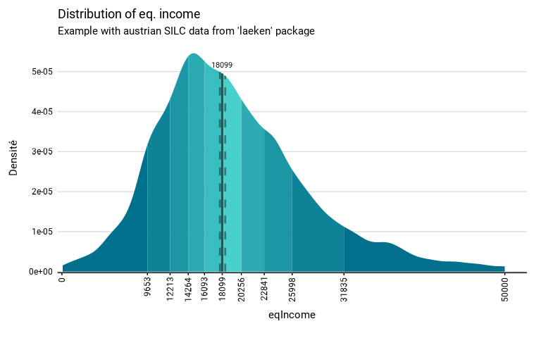

Function to describe a continuous variable from complex survey data
Usage
distrib_continuous(
data,
quanti_exp,
type = "median",
facet = NULL,
filter_exp = NULL,
...,
na.rm.facet = TRUE,
quantiles = seq(0.1, 0.9, 0.1),
bw = 1,
resolution = 1024,
limits = NULL,
show_mid_line = TRUE,
show_ci_lines = TRUE,
show_ci_area = FALSE,
show_quant_lines = FALSE,
show_n = FALSE,
show_value = TRUE,
show_labs = TRUE,
digits = 0,
unit = "",
dec = ",",
pal = c("#00708C", "mediumturquoise"),
color = NA,
font = "Roboto",
title = NULL,
subtitle = NULL,
xlab = NULL,
ylab = NULL,
caption = NULL,
lang = "fr",
theme = NULL,
export_path = NULL
)
distrib_c(...)Arguments
- data
A dataframe or an object from the survey package or an object from the srvyr package.
- quanti_exp
An expression that define the variable to be described.
- type
"mean" to compute mean as the central value ; "median" to compute median as the central value.
- facet
A supprimer?
- filter_exp
An expression that filters the data, preserving the design.
- ...
All options possible in as_survey_design in srvyr package.
- na.rm.facet
A supprimer?
- quantiles
quantiles to be computed in the distribution. Default are deciles.
- bw
The smoothing bandwidth to be used. The kernels are scaled such that this is the standard deviation of the smoothing kernel. Default is 1.
- resolution
Resolution of the density curve. Default is 1024.
- limits
Limits of the x axe of the graphic. Does not apply to the computation. Default is NULL to show the entire distribution on the graphic.
- show_mid_line
TRUE if you want to show the mean or median (depending on type) as a line on the graphic. FALSE if you do not want to show it. Default is TRUE.
- show_ci_lines
TRUE if you want to show confidence interval of the mean or median (depending on type) as lines on the graphic. FALSE if you do not want to show it as lines. Default is TRUE.
- show_ci_area
TRUE if you want to show confidence interval of the mean or median (depending on type) as a coloured area on the graphic. FALSE if you do not want to show it as an area. Default is FALSE.
- show_quant_lines
TRUE if you want to show quantiles as lines on the graphic. FALSE if you do not want to show them as lines. Default is FALSE.
- show_n
TRUE if you want to show on the graphic the number of individuals in the sample in each quantile FALSE if you do not want to show the numbers. Default is FALSE.
- show_value
TRUE if you want to show the mean/median (depending on type) on the graphic. FALSE if you do not want to show the mean/median. Default is TRUE.
- show_labs
TRUE if you want to show axes, titles and caption labels. FALSE if you do not want to show any label on axes and titles. Default is TRUE.
- digits
Numbers of digits showed on the value labels on the graphic. Default is 0.
- unit
Unit showed on the graphic. Default is no unit.
- dec
Decimal mark shown on the graphic. Default is ",".
- pal
color of the density area. maybe one color or a vector with several colors.
- color
color of the density line.
- font
Font used in the graphic. See load_and_active_fonts() for available fonts.
- title
Title of the graphic.
- subtitle
Subtitle of the graphic.
- xlab
X label on the graphic. As coord_flip() is used in the graphic, xlab refers to the X label on the graphic, after the coord_flip(), and not to the x variable in the data. If xlab = NULL, X label on the graphic will be "Moyenne : " + quanti_exp or "Medianne : " + quanti_exp. To show no X label, use xlab = "".
- ylab
Y label on the graphic. As coord_flip() is used in the graphic, ylab refers to the Y label on the graphic, after the coord_flip(), and not to the y variable in the data. If ylab = NULL, Y label on the graphic will be group. To show no Y label, use ylab = "".
- caption
Caption of the graphic.
- lang
The language of the indications on the chart. Possibilities: "fr", "nl", "en". Default is "fr".
- theme
Theme od te graphic. IWEPS adds y axis lines and ticks.
- export_path
Path to export the results in an xlsx file. The file includes three sheets : the table, the graphic and the statistical test.
Value
A list that contains a table (tab), a graphic (garph) and a density table (dens) and a quantile table (quant)
Examples
# Loading of data
data(eusilc, package = "laeken")
# Computation, taking sample design into account
eusilc_dist_c <- distrib_c(
eusilc,
quanti_exp = eqIncome,
strata = db040,
ids = db030,
weight = rb050,
limits = c(0, 50000),
title = "Distribution of eq. income",
subtitle = "Example with austrian SILC data from 'laeken' package"
)
#> Input: data.frame
#> Sampling design -> ids: db030, strata: db040, weights: rb050
#> Variable(s) detectee(s) dans quanti_exp : eqIncome
#> 0 lignes supprimees avec valeur(s) manquante(s) pour le(s) variable(s) de quanti_exp
# Results in graph form
eusilc_dist_c$graph
#> Warning: Removed 1042 rows containing missing values or values outside the scale range
#> (`geom_line()`).

# Results in table format
eusilc_dist_c$tab
#> # A tibble: 1 × 7
#> median median_low median_upp n_sample n_weighted n_weighted_low n_weighted_upp
#> <dbl> <dbl> <dbl> <int> <dbl> <dbl> <dbl>
#> 1 18099. 17842. 18431. 14827 8182222 8079226. 8285218.